01 · Constructora08:00
Un proyecto grande empieza con una búsqueda.
Antes de llamarte, revisan qué has construido y si eres serio.
Si no encuentran nada, llaman a otro.

Prueba · recorrido continuo con cuadros (scroll)Aquí terminaría el hero. Baja con el scroll.
Una mañana cualquiera
01 · Constructora08:00
Antes de llamarte, revisan qué has construido y si eres serio.
Si no encuentran nada, llaman a otro.
02 · Minimarket08:30
Los vecinos nuevos no saben qué vendes, a qué hora abres ni si despachas.
Hoy lo primero que hacen es buscarte en el teléfono.
03 · Consulta09:00
Tus pacientes quieren saber quién los atenderá, dónde estás y cómo reservar.
Si no lo encuentran, reservan con otro.
Muestra lo que haces, dónde estás y cómo contactarte, a cualquier hora y a quien todavía no te conoce.